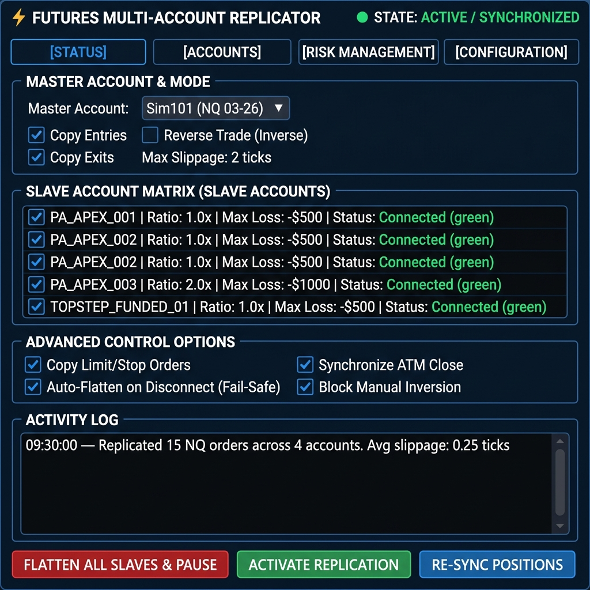

Technical User Manual
📦 Product Overview
The ApexTrader.AI Enterprise Suite for NinjaTrader 8 includes two fully automated strategies with on-chart WPF HUD overlay panels. Both interfaces are 100% in English and rendered directly on the NinjaTrader chart window.
| Product | File | Description |
|---|---|---|
| Market Opening Bot | MarketOpeningBotEnterprise.cs |
Automated NY session opening breakout strategy with 4-stage profit locking and volatility shield. |
| Multi-Account Replicator | MultiAccountReplicatorEnterprise.cs |
Real-time trade replicator from one master account to unlimited slave accounts. |
⚙️ Installation
- Open NinjaTrader 8 → Tools → Import → NinjaScript Add-On.
- Select the
.zipfile:MarketOpeningBotEnterprise.ziporMultiAccountReplicatorEnterprise.zip. - NinjaTrader will auto-compile the strategy. Confirm any prompts.
- Open a chart for your instrument (e.g. NQ 03-26, ES 03-26).
- Right-click the chart → Strategies → Add Strategy → select the strategy.
- Configure all parameters in the Properties panel and click OK.
- The WPF HUD panel will appear overlaid on the chart automatically.
trader@example.com — no cloud check is performed.
During live trading, a background heartbeat runs every 15 minutes (3 retries / 45 min grace period).
Futures Market Opening Bot
ACTIVE / LIVEExecutes a precision breakout entry at the New York opening bell (default 09:30:00 NY) with automated risk management, 4-stage profit locking, and a pre-opening volatility shield.

Live session telemetry (Realized PnL / Open PnL / Trades Today) and 3 action buttons are shown at the bottom.

Purple zone = Pre-Market (08:00–09:29) · Cyan dashed line = NY Open 09:30 · ▲ Arrow = Long entry signal · Red dashed = Stop Loss level · Green dashed = Take Profit level · 💎 Teal diamonds = Profit Lock stages achieved · Orange dashed = Force Flat 15:50
Section 1 — Scheduled Opening Entry
| Parameter | Default | Description |
|---|---|---|
| NY Entry Time | 09:30:00 | New York opening breakout entry time (HH:mm:ss). |
| Entry Window (Sec) | 2 | Max latency/slippage tolerance window in seconds. |
| Contracts | 15 | Number of contracts per trade. |
| Risk ($) | $500 | Max risk per trade in USD. |
| Target ($) | $2,500 | Profit target per trade in USD. |
Section 2 — Risk Management & PnL
| Parameter | Default | Description |
|---|---|---|
| Stop Loss (Ticks) | 103 | Fixed initial Stop Loss in ticks. |
| Take Profit (Ticks) | 384 | Fixed initial Profit Target in ticks. |
| Max Daily Loss ($) | -$500 | Daily hard stop — bot ceases new entries if hit. |
| Daily Target ($) | +$1,000 | Daily profit goal — bot pauses new entries if reached. |
| Force Flat Time | 15:50:00 | Mandatory end-of-day position close time (NY). |
Section 3 — Profit Lock (4 Stages)
As the session P&L reaches each trigger, the corresponding minimum profit is locked in via a trailing stop adjustment.
| Stage | P&L Trigger | Profit Locked | |
|---|---|---|---|
| Stage 1 | $600 | → | $320 |
| Stage 2 | $1,000 | → | $820 |
| Stage 3 | $1,150 | → | $1,050 |
| Stage 4 | $1,800 | → | $1,600 |
Section 4 — Pre-Opening Analysis (08:00 - 09:29 AM)
| Parameter | Default | Description |
|---|---|---|
| Range Threshold (pts) | 51 pts | Pre-market range ceiling. If exceeded, entry is suppressed for that session. |
| Shield Status | SAFE / PROTECTED | Live volatility shield status shown on the HUD panel. |
HUD Action Buttons
| Button | Color | Action |
|---|---|---|
| FLATTEN & CANCEL ALL | RED | Immediately exits all open positions and cancels all working orders. |
| PAUSE BOT / RESUME BOT | ORANGE / GREEN | Toggles between active and paused states. Turns green when resuming. |
| RESET PnL | GREEN | Resets the session P&L counter and trade counter to zero. |
Futures Multi-Account Replicator
ACTIVE / SYNCHRONIZEDReplicates every trade from one master account to unlimited slave accounts in real time, with per-account ratio scaling, daily risk limits, and advanced fail-safe controls.


Green background = Replication Active · Amber background = Replication Paused · ▲ Teal arrow = Replicated Long entry · ▼ Red arrow = Replicated Short entry · ◆ Gold diamond = Replicated exit · Orange vertical = Pause event · Green vertical = Resume event
Section: Master Account & Mode
| Parameter | Default | Description |
|---|---|---|
| Replication Profile Preset | Master_150K_to_Slave_50K | Auto-sets the multiplier for common funded account configurations. |
| Master Account | Sim101 | Exact NinjaTrader account name of the master/source account. |
| Slave Accounts (CSV) | AUTO | Comma-separated slave account names, or AUTO to detect all connected accounts. |
| Multiplication Factor | 0.2× | Contract size ratio applied to slaves (e.g. 0.2× = 1 master contract → 0.2 slave). |
| Copy Entries | ☑ Enabled | Replicate entry orders from master to slaves. |
| Copy Exits | ☑ Enabled | Replicate exit/close orders from master to slaves. |
| Reverse Trade Mode | ☐ Disabled | When enabled, slaves trade the inverse direction of the master. |
| Max Slippage (Ticks) | 2 ticks | Max allowed slippage before a slave order is rejected. |
| Block Position Inversion | ☑ Enabled | Prevents slaves from flipping to an opposite-direction position. |
Section: Slave Account Matrix
Each connected slave account appears as a live row on the HUD showing:
The matrix auto-populates when AUTO mode is set, or after clicking RE-SYNC POSITIONS.
Section: Advanced Control Options
| Option | Default | Description |
|---|---|---|
| Copy Limit/Stop Orders | ☑ Enabled | Also replicates limit and stop orders (not just market orders). |
| Synchronize ATM Close | ☑ Enabled | Syncs NinjaTrader ATM strategy close events to slave accounts. |
| Auto-Flatten on Disconnect (Fail-Safe) | ☑ Enabled | Automatically flattens all slave positions if connection is lost. |
| Block Manual Inversion | ☑ Enabled | Prevents manual orders from inverting the replicated position direction. |
Section: Slave Account Risk Limits
| Parameter | Default | Description |
|---|---|---|
| Max Daily Loss Per Slave ($) | -$500 | Maximum allowed daily loss per slave. Slave replication pauses if hit. |
HUD Action Buttons
| Button | Color | Action |
|---|---|---|
| FLATTEN ALL SLAVES & PAUSE | RED | Immediately flattens all positions on all slave accounts and pauses replication. |
| ACTIVATE REPLICATION / PAUSE | GREEN / ORANGE | Toggles replication between active and paused states. |
| RE-SYNC POSITIONS | BLUE | Re-scans all connected NT8 accounts and rebuilds the slave account matrix live. |
🔒 Cloud License & Security System
Both strategies include a multi-layered cloud license verification system:
- Machine HWID Fingerprinting — SHA-256 hash of machine name, processor count, and system directory.
- Non-blocking Background Verification — Runs on a background thread; never freezes the trading engine.
- 15-Minute Heartbeat — Re-verifies license every 15 minutes during active trading.
- 3-Retry Grace Period — Up to 3 consecutive heartbeat failures (≈ 45 min) before new entries are paused.
- SSL Certificate Validation — All cloud calls use HTTPS for secure communication.
🛠️ Troubleshooting
| Issue | Solution |
|---|---|
| HUD panel does not appear on chart | Ensure the strategy is applied to an active chart window (not SuperDOM or Level 2). |
| No slave accounts in Replicator matrix | Set Slave Accounts to AUTO and click RE-SYNC POSITIONS after all accounts are connected. |
| ⚠️ Heartbeat warning in Output window | Check internet connection. Server: us-central1-apextrader-ai.cloudfunctions.net. 3 retries are allowed before pausing. |
| Buttons have no effect | Ensure you are on a live or sim account with an active data feed. Verify the strategy is in Enabled state in the Strategies panel. |
| Multiplier not applying correctly | Check the Replication Profile Preset matches your account tier, or set it to Custom and enter the factor manually. |